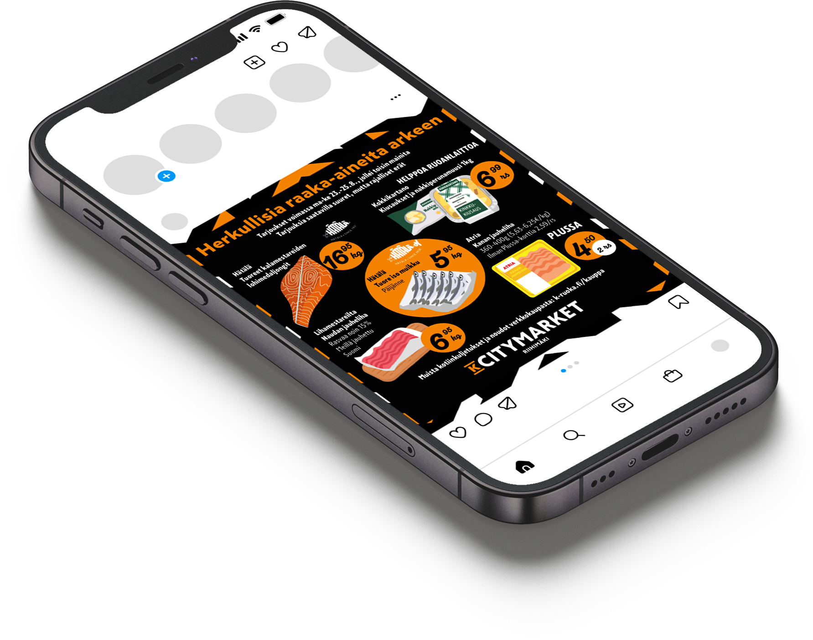
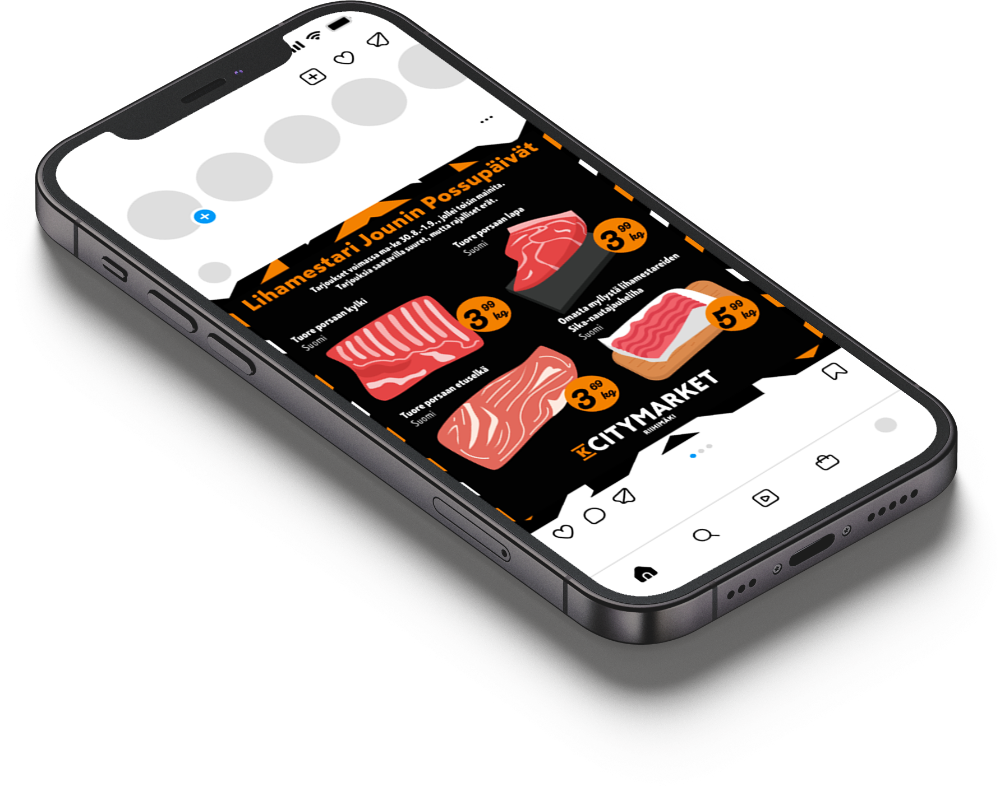

Citymarket
I created newspaper and social media ads for K-Citymarket Riihimäki as a temporary substitute to their graphic designer. The ads were designed following Kesko's visual identity guidelines, but there was room for creativity, for example, in terms of colors and composition. The client desired a sense of personality in the visual appearance of the ads, which is why small illustration elements were used as decorative features in some of them.
Tools
Adobe Indesign
Adobe Illustrator



